Bachelor's Thesis
The right space at the right time
Designing an interactive map for locating study spaces at Aalborg University Library.
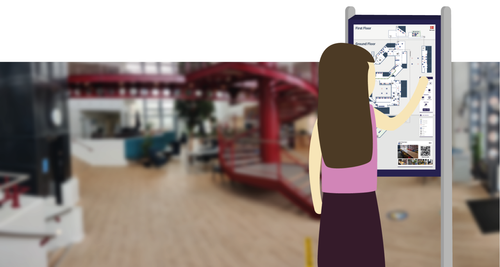Context
In the spring of 2021, Aalborg University Library (AUB) was in the process of moving their main department from one building to another, more centrally located within the AAU campus. With this move, they sought to become more than a repository of knowledge, but also a communal space for people to work together and socialize in a number of different ways. They came to us with the proposal of creating a system which could facilitate this transformation, and simultaneously introduce students to the library in its new form. Together with four other students, this served as the subject of our bachelor’s thesis. Over the course of four months, we created an interface mapping all available study spaces in the new library building, with a filtering system to let each visitor find exactly the space which fit them best. My role in this design process was in gaining a deep understanding of the problem and potential users, ideating and prototyping possible solutions, evaluating them against our own requirements, as well as with students and other stakeholders, and documenting the process in our project report.

The Challenge
Through preliminary discussions with our collaborators at AUB, and visits to the new space, we identified three major challenges that we would have to overcome in order to create an effective solution. These challenges related to the navigation of this new library space, the broad variety in the types of study spaces, and the variety of potential users.
Navigating the space
The new space, in addition to being new to students, was made up of two buildings with complex layouts, and a total of three floors. The system we would create could be the necessary guide for visitors to understand how each area was connected.
Study space variety
There was no standard type of study space, each was unique in its own way, be that in size, style, surroundings, or available equipment. The design would have to take these differences into account, and guide the users’ choice.
Broad range of users
As the needs of each visitor would not be the same, the system would have to take into account what different people would seek in a library study space. The design would have to take these different needs into account, whether they come from students or non-students alike.
My Role
As this project was completed in a group with four other students, responsibilities and tasks were shared. However, I had some role in all phases of the design process, and in cases was solely responsible for certain assignments or features. The following section will describe some of the steps during the project, and the role I played in them.
Problem analysis
In order to dive deeper into the challenges, we carried out a process of problem analysis. My role in this was multifaceted. Part of it was simply exploring the space more intentionally, to understand where people would congregate, and which areas would not be obviously accessible. This process was reminiscent of a sort of site analysis, however due to covid restrictions at the time, we could not observe actual visitors to the library, but rather had to imagine how we personally would navigate it. In the initial phase, we also had multiple meetings with our collaborators at AUB, which helped us gain context for the problem domain, and the needs of different stakeholders.
Part of the site analysis was also identifying and categorizing the different types of study spaces present in the library. In total, there were approximately 140 different study spaces, with seating for over 400 visitors. Different study spaces were differently suited for reading, working, or relaxing with friends. Our task was to organize all 140 spaces into groups, and we did so according to three main factors. The first factor was simply the size of the study spaces, how many people could be seated there. The second factor was the equipment present, whether that be a monitor or a whiteboard. The third factor was the casualness of the space, whether it was more suited for serious work, or lounging. This last factor was most subjective, but identifying a few of the clearer examples helped us to categorize the rest.
 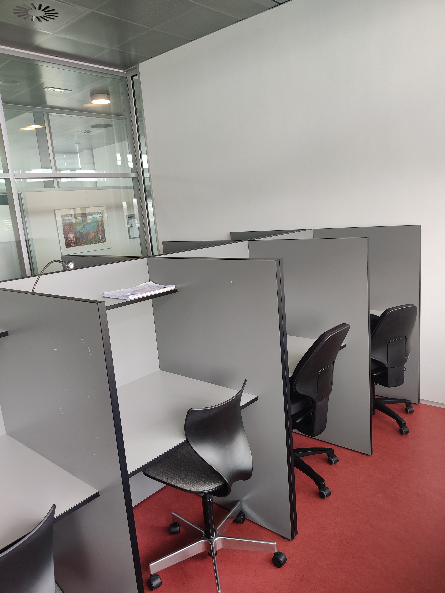
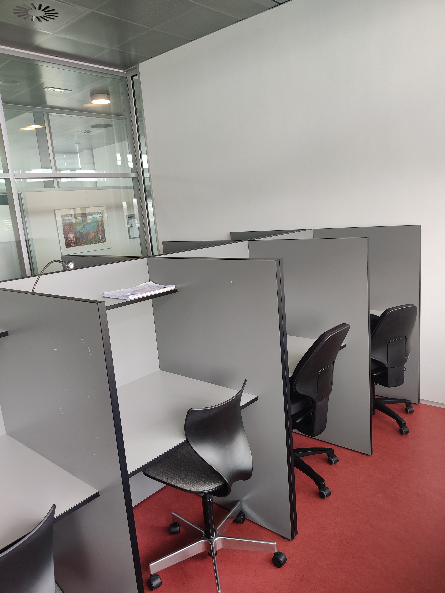


Covid restrictions had another effect; it limited our access to potential users. Ideally, we would be able to iteratively test prototypes with representative users at the library. We instead decided to create typical user personas based on our own experience of the domain and discussions with our collaborators at AUB. These personas helped us to identify five types of users, and what goals and frustrations they have.
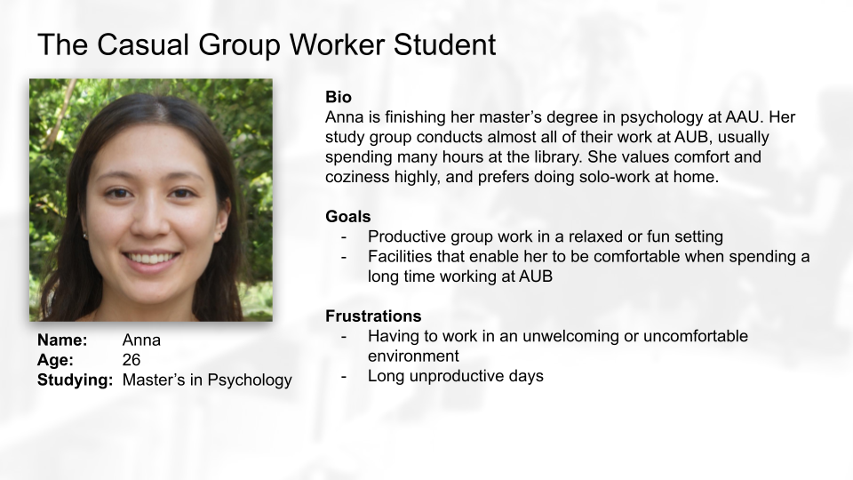Iterative ideation
This project was completed using an iterative approach inspired by the double diamond model. The model splits the design process into four phases: Discover, define, develop, and deliver. Whenever you move from one phase to the next, you alternate between diverging or converging the scope of your ideas. As you move through the model, you turn unknowns into understanding, and broad ideas into concrete functionality.
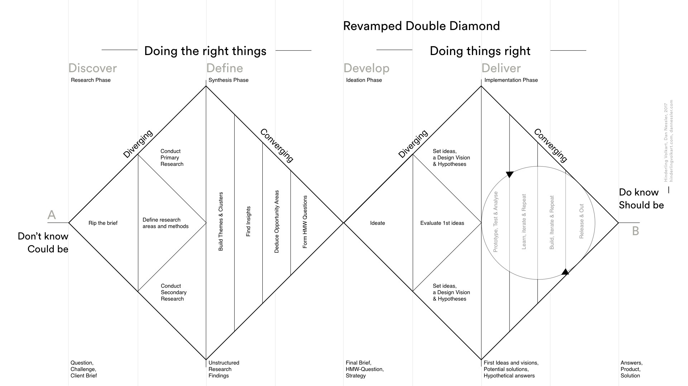Our first iteration was designed to be open-ended, and produce low-fidelity results that could serve as inspiration for discussions with AUB, and consideration in relation to our personas. Ideation started by asking ourselves how-might-we questions regarding the challenges that lay before us, and sketching ideas to answer them. Many of these ideas were only partial and disjointed, but after multiple rounds of collaborative sketching and discussions, we reached three alternatives. We presented these alternative directions to AUB, discussing their viability in solving the problems they faced, and we ended up landing on a solution somewhere between two of the three alternatives.
The goal of our second iteration was to create something that we could test; a low-fidelity prototype with just enough functionality to evaluate the core tasks required of a solution. This meant creating a simple layout with a partial map of the library, with about 20 study spaces displayed, and a filtering interface for users to interact with. After sketching the layout, we developed the prototype in HTML, CSS, and JavaScript. We used this prototype to conduct usability tests with 6 different representative users, which I will describe later.
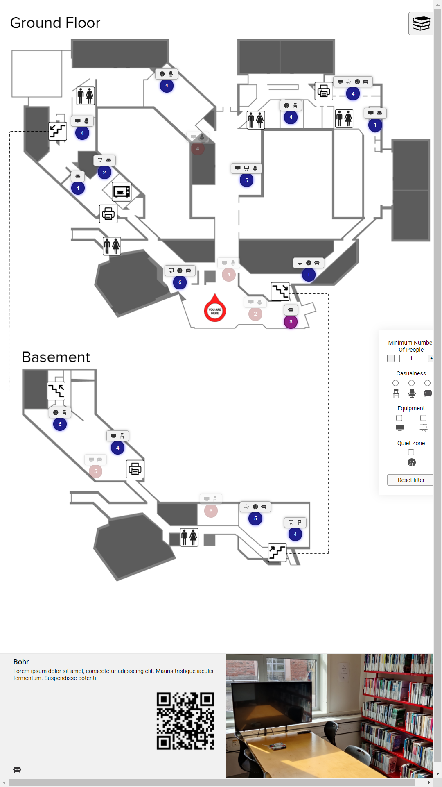The third iteration sought to address some of the shortcomings identified through the previous iteration’s usability tests, and deliver a higher-fidelity prototype, displaying the entire library, and all of its study spaces accurately. After an initial sketching phase, we set about creating the final prototype using Figma. With each feature added to the prototype, it would start as sketches on paper, then be recreated visually in Figma, and then iterated upon until it fit both the aesthetic of the rest of the interface, but also interacted with it, using the Figma prototyping tool. The result of this process resulted in a prototype ready for a more comprehensive user study, but due to time constraints only underwent a heuristic evaluation, which I will discuss later.
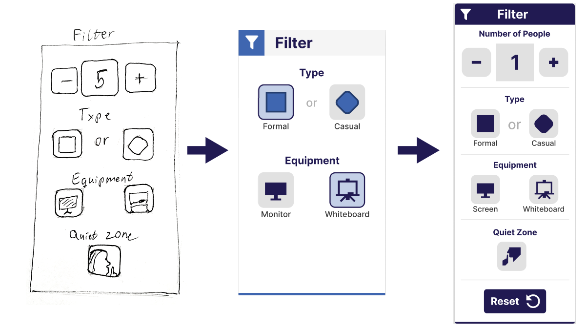Usability testing
As mentioned, as a conclusion to the development of our second prototype, we conducted usability tests with representative users. We found six participants between the ages 23-25, five of them AAU students. While we could not conduct these tests at AUB, it was my role as facilitator to present them with the context surrounding the prototype. After this introduction, the participants were presented with tasks to complete within the system, which would reflect real use cases. Tasks involved filtering study spaces according to a specific need, locating specific facilities, or explaining how to navigate to them. Post-interaction tasks challenged the learnability and memorability of the system, as participants were asked to explain how certain outcomes could be achieved in the system, but not letting them interact with the system. As facilitator, I would present these tasks and observe the participants try to complete them. While I would intervene if they were completely stuck, I would let them make mistakes, as only then could we really spot the flaws in our design.
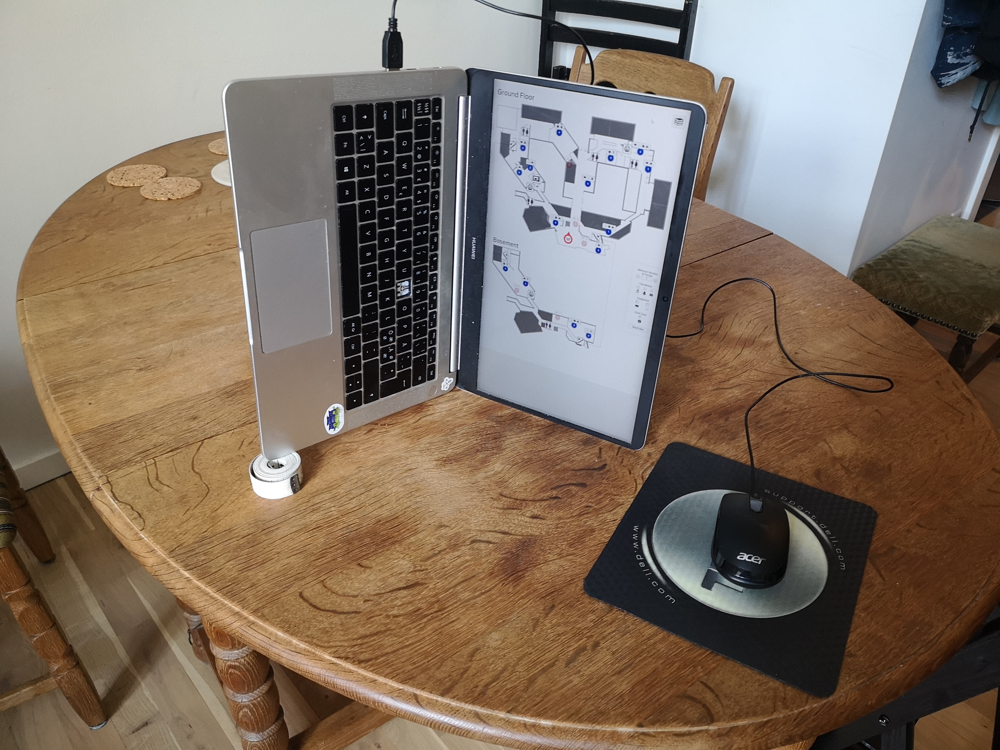The data collected from these usability tests consisted of screen, voice, and video recordings of the participants completing each task. Reviewing this footage, we made a note every time they hit an obstacle, found success, or in some way had a notable reaction to the system. With these notes we created groups of similar responses, or parts of the interaction that multiple people experienced difficulty with. These groups, seen now as the crucial findings from the evaluation, would then guide our following iteration.
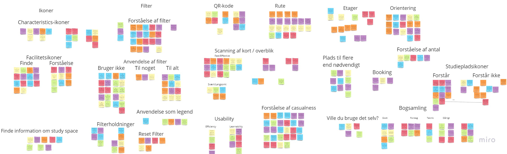The Results
The results of the initial ideation phase, and two design iterations was a high-fidelity interactive prototype created in Figma. While this final prototype was not a fully functional system, it did include the features necessary to conduct usability tests to evaluate whether it would meet the criteria for success as agreed upon by our collaborators at AUB. While time constraints did not allow us to test this final prototype with users, we were able conduct a heuristic evaluation based on the challenges we had identified, the needs of various stakeholders, including the users and AUB, as well as established design principles and conventions. The following section will describe the prototype, highlighting some of its core features, and explain the design thinking that lies behind them.
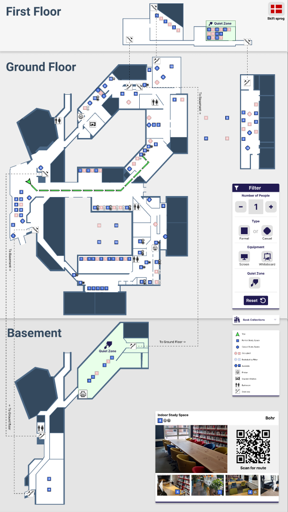Map & facilities
One of the major challenges facing this project was the complexity of the new space that AUB moved into. Displaying three floors across two buildings in a comprehensible manner was difficult, but by focusing on clarity, and trying different ideas, we finally reached something that users would be able to understand. Research into best practices for indoor map design emphasized clear visual separation of building levels, as well as relying on visible landmarks for the visitor to navigate by. In our case, our map was split into three sections, one for each floor, with clear delineations between them. Additionally, showing staircases, bathrooms, kitchens, printers, and classrooms on the map both informed visitors of the facilities present, while simultaneously acting as landmarks throughout the library. These facilities were presented as icons on the map, supported by a legend which explained each one. The map of the library itself I created in Figma, based on floor plans provided for us by AUB, and updated based on any changes made to the building since then.
Filtering study spaces
The core feature of the study space locator, beyond giving visitors a general overview of available study spaces, is to filter this overview according to their needs. From our problem analysis phase, we had identified three categories that differentiated the 140 study spaces; size, casualness, and available equipment. Additionally, some study spaces were located in ‘quiet zones’, which added another metric to filter by. Having categorized each space according to these properties, we now let the user narrow down appropriate spaces for themselves, through a simple, intuitive interface.
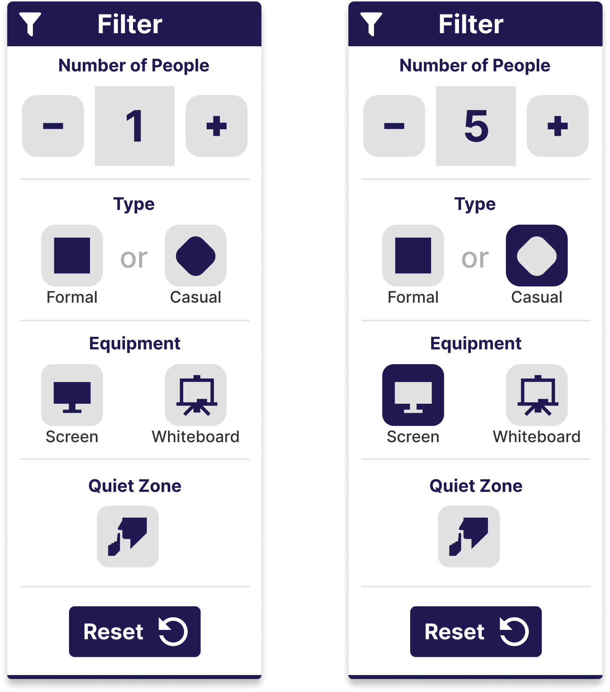Navigating to the space
After having selected a suitable study space, the system’s final task was to guide the visitor there. Their navigation was supported by three features. The first being a route showing their own position and orientation, assuming that they are facing the system. This route was meant to give them an initial idea of where to go, as well as clearly show whether their destination was on another floor. However, as the system was meant for a stationary touch screen, they could not take this route with them. The second feature was a QR code, which users could scan to display the route on their own phone, and not lose their way while navigating. The third feature was the simplest, it showed a unique name and image of the chosen study space, which also would display when scanning the QR code. This would help visitors recognize the study space once they got there, making sure they found the right one.
As mentioned, the time constraints of the project did not allow for a user evaluation to be conducted with the final prototype, so we instead decided to conduct a heuristic evaluation. This meant looking through the lens of the personas we had developed, as well as the conclusions gathered from the user evaluation we had conducted with our previous iteration. While we identified real improvements in this iteration, and concluded that it would be a viable solution once fully functional, those conclusions were not based on realistic testing with representative users. If time allowed, the next steps of this project would be to conduct a thorough user evaluation, putting the prototype up against real users in the library it was designed for. This would no doubt identify shortcomings in the design, but could also highlight its strengths, and lead to a product ready to meet the challenges it was designed to solve.
Grade: 12